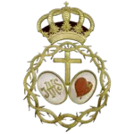
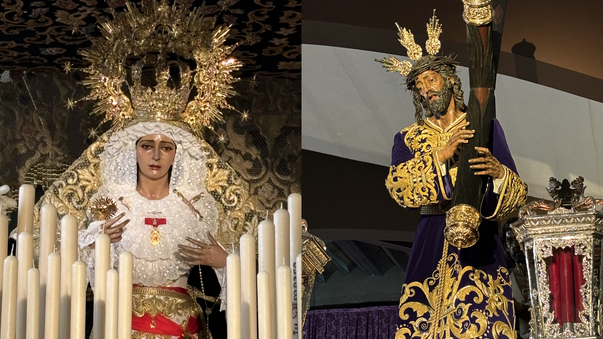

La Pasión
Real e Ilustre Hermandad Sacramental y Cofradía de Nazarenos de Nuestro Padre Jesús de la Pasión y Nuestra Madre y Señora del Amparo

Residencia Canonica
Parroquia Nuestro Padre Jesús de la Pasión
Numero de hermanos
1115
Nazarenos
275
Autores
Nuestro Padre Jesús de la Pasión es obra de Luis Álvarez Duarte (1990), autor también de Simón de Cyrené (1995). Nuestra Madre y Señora del Amparo es obra de Luis Álvarez Duarte (1971).
Capataces
Jose Mije González (capataz general) y su equipo de auxiliares.
Música
B.C.T. Santisímo Cristo de la Victoria (León) tras el Señor y Banda de Música de Santa Ana tras el Palio.
RECORRIDO
| Hora | Cruz de guía |
|---|---|
| 16:45 | Salida |
| -- | Avenida Primera |
| -- | Váleme Señora |
| -- | Avenida de Las Portadas |
| -- | Avenida de la Victoria |
| -- | Avenida Quinta |
| -- | Avenida del Triunfo |
| -- | Virgen de la Encarnación |
| -- | Virgen de los Milagros |
| -- | Virgen de los Dolores |
| 18:00 | Autovía |
| -- | Virgen de los Reyes |
| 19:00 | Los Pirralos |
| 19:30 | Carlos I |
| 20:00 | Santa Cruz |
| -- | Plaza de Menéndez Pelayo |
| 20:30 | Sta. Mª. Magdalena |
| -- | Plaza de la Constitución |
| 21:00 | Carrera Oficial |
| -- | San Francisco |
| -- | Antonia Díaz |
| 21:30 | Manuel de Falla |
| -- | Romera |
| 22:00 | Reyes Católicos |
| -- | Manuel Rubio Doval |
| -- | Navarra |
| -- | León |
| 23:00 | Al Andalus |
| -- | Hispalis |
| -- | Iberia |
| -- | Ruiseñor |
| 00:00 | Virgen del Rocio |
| -- | Autovía |
| -- | Virgen de los Dolores |
| 1:00 | Virgen de la Paz |
| -- | Virgen de la Encarnación |
| -- | Avenida del Triunfo |
| -- | Avenida Primera |
| 1:30 | Entrada |